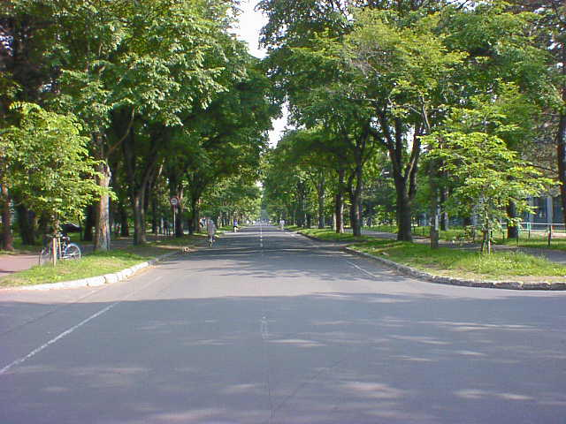

７月１０日（初日）
今日の出来事
09:00
忘れ物を気にしつつ出発。
10:00
新宿から羽田行きのバスに乗車。
10:50
羽田到着。
12:30
ＧＬＡＹジャンボが北海道に向けて飛び立つ。
15:00
新千歳空港に到着。快速エアポート（電車）にて札幌へ。
15:40
札幌駅到着。初日のホテルはここから地下鉄南北線に乗り２駅目の北１８条。
16:00
ホテル到着。以降自由行動へ。
旅メモ
09:00〜
推定１２キロの折りたたみ自転車とリュックをしょって自宅を出発。最寄の駅に着くまでにかなり疲れた。
歩いては休み、歩いては休み・・・という具合で普段の倍くらいかな。
こんな感じの荷物です。
10:00〜
バスは先着順ということなので早めに並びました。結局がらがらでしたけど。
四谷方面に向かっていき、赤坂あたりで高速に入り、レインボーブリッジを渡っていくというルートでした。
お台場は以前見たときとはだいぶ変わっていて、フジテレビの建物をはじめて見てしまいました。
10:50〜
まず重たい自転車をカウンターで引渡してチェックインたあと、飛行機の時間まで一時間以上あったの
で空港内をうろうろしていました。自転車に着いては扱いが心配だったんですけれど、取り扱い注意の札
をつけてくれて手運び、手渡ししてくれるということなので安心しました。荷物チェックを済ましたあと搭乗
口に行くとすでにＧＬＡＹジャンボが待機しておりあちこちで写真を撮っている人が見うけられました。僕も
撮りましたけど。
その写真はこちら。
12:30〜
座席が通路側だったのでつまらなかったです。機内ではＧＬＡＹオリジナルビデオの上映、ＧＬＡＹジャン
ボクリアファイルの配布、ジュース用の紙コップにＧＬＡＹの絵が入っているなど、ＧＬＡＹ尽くしでした。
15:00〜
新千歳空港から札幌まで約４０分。電車賃１０４０円。た、高い・・・。
電車内で山形から旅行できたおじちゃん、おばちゃん夫婦とちょっとお話しました。僕の大きい荷物に目
がいったみたいでした。
快速エアポート（千歳線）。
15:40〜
一年ぶりの札幌、ちょっと感動。しかし体力が残り少ないのでとっととホテルに向かうことにしました。南
北線に乗り換え最寄の駅に着いたんですけれど道がわからない。地図を見ても目印がないので方向すら
わからない始末。さまよっている間に体力が尽き、ついに最終手段をとってしまいました。ここで使いたく
はなかったんですけれど（なんとなく）それによって何とかホテルにたどり着くことができました。めでたし、
めでたし。ちなみに最終手段とは「チェンジ」です。
16:00〜
到着後速攻で戦闘準備を整え、愛車に乗り札幌に向かいました。初日なのでとりあえず地理の把握の
為、札幌駅周辺の碁盤の目を走りまくりました。懐かしい風景がいっぱい出てきてすごくうれしかったです。
大通公園のとうきびも当然食べました。しばらく走った後、ちょっと離れた場所にある中島公園をゆっくり
見てこの日の活動は終了。
中島公園。

北海道大学にて（２日目）
戻る